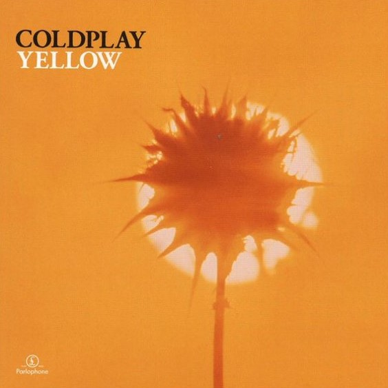
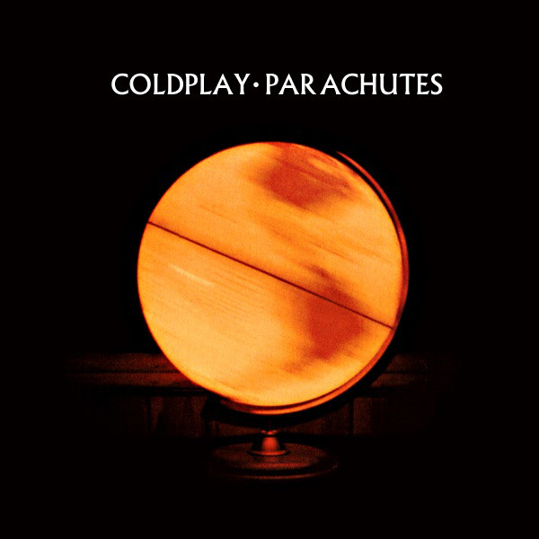

About Coldplay
To see the list of songs by Coldplay, click here
Coldplay released two EPs, Safety in 1998 and The Blue Room in 1999. The latter was their first release under a major record label, Parlophone.
Coldplay achieved worldwide fame with the release of the song "Yellow" in 2000, followed in the same year by their debut album Parachutes, which was nominated for the Mercury Prize.


The band's second album, A Rush of Blood to the Head (2002), was released to critical acclaim. Their next record, X&Y, was the best-selling album worldwide of 2005; the Brian Eno-produced fourth studio album, Viva la Vida or Death and All His Friends (2008), was the best-selling album of that year and earned the band three Grammy Awards.
In 2011, Coldplay released their fifth studio album, Mylo Xyloto, which topped the charts in over 34 countries and was the UK's best-selling rock album of 2011. The band have since released Ghost Stories (2014), A Head Full of Dreams (2015), Everyday Life (2019) and Music of the Spheres (2021).
Coldplay have sold more than 100 million albums worldwide, making them one of the world's best-selling music artists. They have won numerous awards throughout their career, including nine Brit Awards, seven MTV Video Music Awards, eight MTV Europe Music Awards and seven Grammy Awards from 35 nominations.
The band's first three albums—Parachutes (2000), A Rush of Blood to the Head (2002), and X&Y (2005)—are among the best-selling albums in UK chart history.
In December 2009, Rolling Stone readers voted the group the fourth-best artist of the 2000s and Q magazine included the group in their Artists of the Century list. Coldplay have supported various social and political causes, such as Oxfam's Make Trade Fair campaign and Amnesty International.
They have also performed at charity projects, including Band Aid 20, Live 8, Global Citizen Festival, Sound Relief, Hope for Haiti Now: A Global Benefit for Earthquake Relief, One Love Manchester, The Secret Policeman's Ball, Sport Relief and the UK Teenage Cancer Trust.